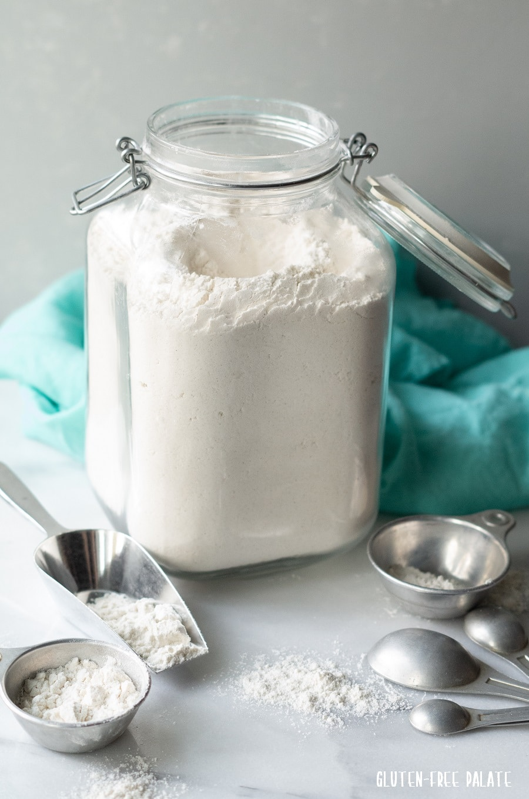

Emel Multigrains Gluten Free Flour
100% Natural
Emel Multigrains Gluten Free Flour
Benefits of Gluten Free Flour?
Do you feel uneasy after having chapati or bread? Well, that might be due to your gluten intolerance! Nowadays, many people are complaining about grogginess, stomach upset, swelling on the skin and itchy rashes after having regular Atta products. If you are facing these types of problems, you should give gluten-free atta a shot! Wondering what's gluten? What gluten free atta benefits are? Why does gluten cause allergies? Is gluten free atta only for those who suffer from gluten intolerance ? Don't worry! We have all the answers. To answer simply, gluten free flour contains alternatives to using wheat, barley, rye, and triticale. It may contain one flour, or a blend of different types of flour from sources such as rice, corn, arrowroot, quinoa, beans, lentils, almonds, potatoes, tapioca, and other safe to consume foods. While many people think gluten-free diets are more nutritious and contain more minerals and vitamins than conventional foods, the opposite is often true. Gluten-free foods are commonly less fortified with folic acid, iron, and other nutrients than regular foods containing gluten.

Gluten-free atta can help with weight loss, especially if you have gluten sensitivity or celiac disease. Weight reduction, however, is also affected by general dietary and lifestyle choices. Gluten is a protein that is found in wheat and other cereals. It gives dough flexibility and contributes to the structure of baked foods. Some people, however, must avoid gluten for medical reasons. Gluten-free foods can offer benefits such as improved digestion, relief for individuals with gluten sensitivity or celiac disease, and potential weight management. Before you make any dietary changes, you must know about its benefits. So, before you choose to use low-gluten atta over gluten-free atta, you need to know what are benefits you will get : High source of protein Having a low gluten meal does not mean an imbalanced diet. Low gluten content in native wheat atta has high protein, close to 14 grams, highest than much gluten-free atta. Low Glycemic Index

Gluten-free atta can help with weight loss, especially if you have gluten sensitivity or celiac disease. Weight reduction, however, is also affected by general dietary and lifestyle choices. Gluten is a protein that is found in wheat and other cereals. It gives dough flexibility and contributes to the structure of baked foods. Some people, however, must avoid gluten for medical reasons. Gluten-free foods can offer benefits such as improved digestion, relief for individuals with gluten sensitivity or celiac disease, and potential weight management. Before you make any dietary changes, you must know about its benefits. So, before you choose to use low-gluten atta over gluten-free atta, you need to know what are benefits you will get : High source of protein Having a low gluten meal does not mean an imbalanced diet. Low gluten content in native wheat atta has high protein, close to 14 grams, highest than much gluten-free atta. Low Glycemic Index Native wheat flour falls lower in the glycemic index. They don’t increase blood glucose levels. The low gluten and low GI aspects of ancient wheat atta make them suitable for diabetic and heart patients. Rich in fibre The wheat flour made from native wheat varieties has high fibre content. So, you don't need to think about digestive disorders. These flours contain a lot of fibre that promotes easy digestion, healthy bowel movements and balanced metabolism. Low Gluten Atta is Nutrient RichNative wheat flours like khapli atta are jammed packed with nutrients. They contain vitamins, minerals, iron and magnesium. You will not face flatulence after having this atta! Improves your gut diversity Since you were avoiding carbs to reduce your gluten intake, you couldn't taste diverse foods. Now, with less gluten flour, you are open to an avenue of food options! This is good for your gut. Diverse food improves your gut microbiome. Wondering what is its benefit? Well, a healthy gut is a symbol of a healthy body. Besides that, you can prevent irritable bowel syndrome and lead a healthy life. Beneficial during pregnancy Becoming a mother is tough! During pregnancy, there can be a lot of complications that you can face. So, it's better to choose native wheat flour like khapli or bansi, etc. during pregnancy. The high fibre helps to avoid constipation. Moreover, it is good during post-pregnancy and weight management.
Change your taste


Free Shipping

Online Order

Save Money